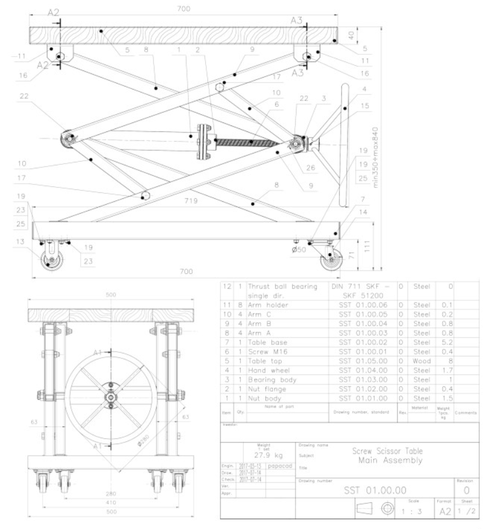

The Piccolo micro kitchen has many mechanisms that allow for cabinets to be hidden or brought forward to give the feel of a full sized kitchen in a reduced space. I focus on a platform that slides over the sink and stove to create more space for food preparation as well as a space to be used as a desk.
The kitchen has two preparation tables that slide over the sink and stove. One such table is shown in the animations above. The table has two components. First is the drawer that slides the table off the kitchen. The drawer is powered by a linear slide and supported by two telescoping slides on either side of it.
The second part of the preparation table is a rotating aspect. This part allows for use of the stove/ sink even if there is no space to the side for the drawer to slide out. The rotating part of the table then fits into the existing wall of the kitchen.
.....
The rotation piece is attached to the drawer through a rod that goes through two mounted bearings on either side. The rotating piece can either be screwed or welded to the rod.
The rotating piece is then powered by a motor mounted in the drawer. It is meant to be chain driven between the two gears shown.
.....
.....
The idea behind the preparation table was that it could replace the many tables people have in their homes for different purposes. The table ranges in height from 18in to 36in. The intended purposes for this table are as follows:
.....
.....
.....
At 18in, it is the height of a coffee table. This makes the table easy to store away.
At 22in, it is the height of a child's play table. This is ideal for families with children because it is often difficult to have a dedicated space for kids to play.
At 27in, it is the height of a wheelchair accessible desk. This means as people age the table can change to accommodate their needs.
At 30in it is the height of a dining room table
At 36in it is the height of a kitchen island/countertop
A portion of the table can then be raised to create a desk from the coffee table height and a bar from the island/countertop.
.....
.....
.....
.....
The design for the scissor lift is an 8bar system such as the one shown here.
The advantage of this system is that the mounting points on the top and bottom remain stationary. The system is powered by a lead screw that brings the center section closer together. The wheel in this image would be replaced with a motor.
.....
.....
The rising top portion is based on a 4bar parallel lifting mechanism similar to the image on the left. This setup would both allow the table to transform into a desk and bar as described above as well as flatten out into a larger table as shown to the right.
.....
.....
.....
The combined design is to the right and shows where the motor for the lifting section of the table is. It is designed to be driven by a chain between the 2 gears shown.
.....
.....
.....
.....
.....
.....
.....
.....
.....
.....
.....
.....
Rotating motor:
¼” x 24” x 24” MDF weight = 4.5lbs or 20N
T = RxF = .3m(12”)*20N = 6Nm
Let t be the time we want it to take to open/close
Speed = 15rpm*t
Linear slide:
Handy calculator for lead screw math:
https://www.daycounter.com/Calculators/Lead-Screw-Force-Torque-Calculator.phtml
Estimated weight of the drawer = 60N
Slide should be able to traverse 24”
Torque on fully extended drawer = RxF = .3*60 = 18Nm (slides connection to the frame must be able to resist this)
Parallel bars:
T on the center bar (where the gear is now in the design) = 12Nm
Speed = 30rmp*t
Linear slide/ lead screw:
Force needs to be greater than 1/2mg = 60N
Mg = 40*3 = 120N
M16 steel screw 2mm/thread
T needed = 0.09Nm
Slides:
https://www.velmex.com/Products/BiSlide/BiSlide_Motorized.html Velmex Bislide 30” travel Motor: PK266 stepper or Nema 34 stepper Dynamic load capacity: 100lbs
Anti-Backdriving:
If you drive the worm gear below you can lock the system because the worm gear is able to turn the gear, but the gear is not able to turn the worm gear. The other advantage of a worm gearbox is that they have high reduction ratios, meaning you get more torque and less speed. This is ideal in our case because we are not working with high speeds but have large torque loads. https://www.amazon.com/uxcell-70Kg-cm-Self-Locking-Encoder-Reduction/dp/B0788CHH8Z?ref_=Oct_s9_apbd_orecs_hd_bw_b16rWp&pf_rd_r=ZBVJH1Y6KS8MQYHH41D6&pf_rd_p=bb719997-3b7e-57a6-8815-a84e59b5f943&pf_rd_s=merchandised-search-10&pf_rd_t=BROWSE&pf_rd_i=16412071
Both of the projects use bushing and sprockets like: https://www.mcmaster.com/bushings/bushings-for-chain-and-belt-drives/quick-disconnect-qd-bushings/